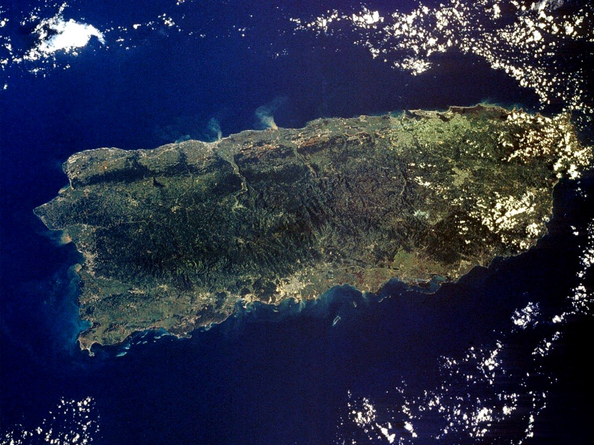
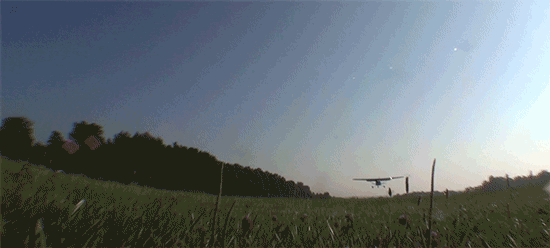

You decide to take the flight to San Juan.
Although you boarded on time, the heavy knot persists in your stomach.
A young man sits in the seat beside you and introduces himself with a smile.

You are in no mood for conversation, but he begins speaking to you as if you had known each other for years.
You find this strange, and respond with one-word answers.
Clearly unable to take a hint, the man continues on.
\
"So, what brings you to Puerto Rico?" he asks.
For a moment, you consider asking for help, but then remember what the recording said.
Do you ask for help or keep to yourself?
You will not take any chances on the life of your loved one.
With a forced smile, you reply "I am going on vacation."
Eventually, he leaves you alone.
Throughout the 10 hour flight, you anxiously wonder what will happen once you arrive to Puerto Rico.
\
Finally, the plane finally descends. 
As you approach the terminal, the phone rings, displaying a blocked number.
Another recording of she same voice says, Meet us at Castillo San Felipe del Morro."
\
You exit the terminal, rent a car and drive to the castle of El Morro.
The black, 500-year-old fortress gives you an uneasy feeling.
Suddenly, you remember that it was a prison and many have died there.
\
As you purchase your ticket, the security gaurd hands you a map with two spots marked.
One is the cementary, the other is the tunnels.
"We were expecting you. The fortress closes in one hour.", he whispers
Do you go to the tunnels or the cementary?
Even though you do not trust strangers, an intense feeling of desperation causes you to ask for help.\ On a napkin, you write out “I am in danger.”\ You look at the man closely in an effort to communicate your fear, then you slide the napkin onto his tray.
\
He reads it over, but you see no change in his expression.
\
He responds “I know, (your name). You should not have done this. We will regret it.”\ You then remember seeing him in the terminal before boarding, and realize that he’s been following you all along.
\
Next
You head toward the tunnels. As you walk through them, the lights dim.
A figure approaches you and asks for the phone you had recieved earlier."\Next
As he opens the back and pulls out the memory card, your loved one comes running from around a corner, into your arms.
"You have found me! Lets get out of here.Click here to play again.
You go to the cementary: As you enter the cementary, you read a sign that says "Many have entered, none have left." A man approaches you. As he comes closer, you see that he is the man from the airplane. As he pulls a concealed weapon from his belt, he says "You have failed." and shoots you.
Click here to play again.
Suddenly, a blow to the opposite side of the plane sends you flying into the seat in front of you. You heart sinks to your knees and you become frozen in your seat as the pilots trembling voice says "We have been hit by a drone".
Click here to play again.